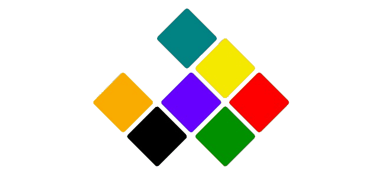

I am Karthik I am a sixth grader at Parkmont and a certified Coder. I was born on August 19 2010.My hobby is Coding. Code is my favorite Hobby. When I get some free time after my studies,I get on the computer and Code.I also become delighted by Code because I don’t waste my life sitting in front of a screen and doing nothing or playing video games. Instead, I do a mind-sharpening activity. On every day, I code games for two or three hours. I have downloaded my Brackets,Visual Studio Code, and Node.Js to help me.I also got another benefit, if i keep on coding I can design games for myself instead of buying them for money.
